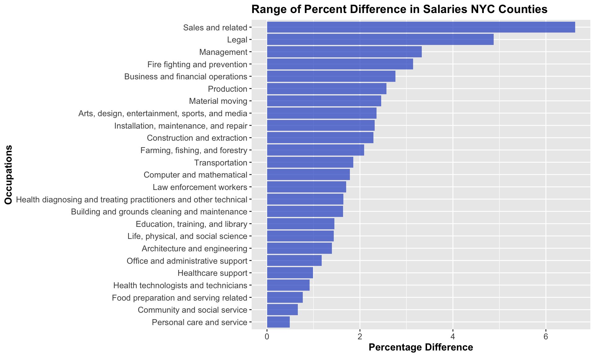

Chapter 5 Employment
This sub-chapter shows an analysis of employment for different occupations in New York City.
5.1 Overview of Employment Distribution
In order to have an overview of employment distribution according to different occupations in New York City, we draw a Cleveland Dot Plot to show the 10-year-average of number of employed first.

Observations on Number Employed by Occupation in NYC:
- Huge Differences in Number of Employed in Different Occupations.
- There is a huge difference in number of employed among occupations. The sector with the biggest number of employed is office and administrative support, and the number of employed is 757015. However, for farming, fishing and forestry, which has the smallest number of employed, there’s only 4864 on average.
- Three clusters for employment.
- The first group includes
Office and administrative support,Management,Sales and related, which is a group with the biggest number of employed. - The second group includes the majority of occupations and have relatively similar number of employed among occupations.
- The third group contains
Farming, fishing, and forestryonly, which is the group with the smallest number of employed.
- Gaps between the three clusters.
- As can be seen from the plot, the gap between the first group and second group is very large, while the gap between the second and third group is relatively small.
- Top 3 and Last 3 Occupations in Employment.
- Top 3
- Office and administrative support
- Management
- Sales and related
- Last 3
- Farming, fishing, and forestry
- Life, physical, and social science
- Law enforcement workers
5.2 Analyze on Employment by Years
One of the things that affects employment is time. So first, we have an analysis on employment in different years.
5.2.1 General Trend of Employment by Years

Observations on Number Employed by Occupation NYC through 2010-2019:
The most striking observations from this Cleveland dot plot are where there are clear trends over the decade, that coincide with intuition about the general trend of a sector. Some of the most striking trends are:
1.) Production occupations steadily decreasing over the course of the decade, the only sector where the number of employees for 2010 is lowest of the three years.
2.) Material moving occupations steadily increasing over the course of the decade.
3.) Computer and mathematical as well as architecture and engineering occupations quite quickly increasing over the course of the decade especially relative to their size.
4.) Health care support occupations growing at a stagnant rate from 2010 to 2015, but then growing rapidly from 2015 to 2019.
5.) Food preparation and serving related occupations growing steadily from 2010 to 2019.
In order to see the employment variances of the 25 occupations in detail, we draw boxplot for comparisons.

Observations from Boxplot of number working in sector per year:
Occupations that seem prone to dramatic fluctuation over time:
1.) Management occupations
2.) Office and administrative support occupations
3.) Health care support occupations
4.) Computer and Mathematical occupations
Occupations where the number of employees has fluctuated very little:
1.)Law enforcement
2.)Fire fighting
3.)Building and grounds keeping occupations
4.)Legal occupations
Something to be noted when reading this plot is that the number of people working in any particular occupation may change the viewers perception as to what constitutes more variation. To address this, a second plot has been created in which the box plots are normalized by dividing the number employed in each year by the mean across this sector. While the variation in total number employed won’t be apparent, the relative degrees of fluctuation will become more apparent.

Observations from number working in sector per year:
In this plot, the total values of employees working in each field in each year are normalized by their averages. In doing this, changes in employment in a sector that on an absolute scale would be small, may be more pronounced as a function of variation relative to it’s own size.
In this plot, the average quantity across all years is normalized to one for illustrative purposes, which allows for new interpretations and findings:
1.) Fields such as management which had a large absolute spread from the years 2010-2019 aren’t necessarily the ones which seem to display the most variation with respect to themselves. While management had the largest box in the previous plot, it is in the middle of the pack in this one.
2.) Of the fields with the smallest numbers of workers: Farming, fishing and forestry occupations, Life, physical and social science occupations, Law enforcement occupations, firefighting occupations, and architecture and engineering occupations; The spreads across this decade were shown to be much more profound than in the previous plot, that is with the exception of law enforcement workers and firefighting workers. While the boxes grew somewhat in spread, the growth was not even nearly proportional to that of the other fields.
This indicates that the number of people working in law enforcement and firefighting is very stable, and this would make sense because a steady supply of people in these roles is necessary. With regards to the other occupations, it also makes sense that relatively unpopulated occupations would be more prone to greater variation as a percent of itself, since relatively few can leave or join, and a big impact can be had.
3.) As a percent of the number of employees working in each sector, the following were most prone to large shifts in number employed:
- Farming, fishing and forestry
- Material moving occupations
- Computer and mathematical occupations
- Health technologists and technicians
- Healthcare support occupations
By contrast, these professions were the most stable:
- Legal occupations
- Sales occupations
- Law enforcement workers
- Fire fighters
- Construction and extraction occupations
5.2.2 Monotonicity in Employment Trends
From the plot above, we can divide all occupations into three catogories. The first group is in a monotonous increasing trend, the second group is in a monotonous decreasing trend, and the third group do not have a monotonous trend in number of employed people by years.
5.2.2.1 Monotonous Increasing
We have 14 kinds of occupations in this group:
1. Management Occupations
2. Healthcare support occupations
3. Business and financial operations occupations
4. Computer and mathematical occupations
5. Education, training and library occupations
6. Art, design, entertainment, sports and media occupations
7. Health, design and treating practitioners and other technical occupations
8. Construction and extraction occupations
9. Architecture and engineering occupations
10. Fire fighting and prevention, and other protective service workers including supervisors
11. Community and social service occupations
12. Life, physical, and social service occupations
13. Law enforcement workers including supervisors
14. Farming, fishing and forestry occupations
5.2.2.2 Monotonous Decreasing
We have only one kind of occupations in this group:
1. Production occupations
5.2.2.3 Not monotonous
We have 10 kinds of occupations in this group:
1. Office and administrative support occupations
2. Food preparation and serving related occupations
3. Transportation occupations
4. Material moving occupations
5. Health technologists and technicians
6. Personal care and service occupations
7. Building and grounds cleaning and maintenance occupations
8. Sales and related occupations
9. Legal occupations
10. Installation, maintenance, and repair occupations
We further study on the group that does not a monotonous trend with line chart.
5.2.2.4 Occupations without Monotonous Trend

Observations from sectors without clear employment trends:
Here are descriptions of how these sectors have fluctuated:
Office and administrative support occupations
The number of employees in this group was consistently high before 2017, while from 2017 to 2019, the number of employees dropped dramatically.
Food preparation and serving related occupations
In this group, the peak of the number of employees were present in 2015.
Transportation occupations
Generally speaking, the number of employees was increasing. However, from 2018 to 2019, there was a rather pronounced drop, which is the reason that the number of employed in 2019 was smaller than that in 2015.
Material moving occupations
For this group, the number of employees dropped slightly from 2010 to 2011, then increased from 2011 to 2012. Afterwards, the number of employees started to decrease again until 2016. Then there was a sudden increase from 2016 to 2018 and maintained at a high level in 2019 with a subtle decrease.
Health technologists and technicians
The number of employees was consistently low from 2010 to 2013. Then the number started to increase until 2015 and maintained a relatively high level afterwards. Despite frequent dips and spikes, it seems that the number of employees in this occupation is trending upward on the whole.
Personal care and service occupations
Generally speaking, the number of employees in this group increased from 2010 to 2016, then it dropped slightly from 2016 to 2017 and then dropped significantly lot from 2017 to 2018, accompanied by another slight drop from 2018 to 2019.
Building and grounds cleaning and maintenance occupations
From 2010 to 2012, the number of employees in this group was decreasing, then the number increased a lot from 2012 to 2013 and continued to decrease from 2013 to 2016. Then it continued to increase for a little bit again from 2016 to 2017, but returned to a dropping trend from 2017 to 2019.
Sales and related occupations
The number of employed increased a lot from 2010 to 2011 for this group. Then within the year range from 2011 to 2016, the number remained at a high value, with two relatively low values in 2013 and 2015. However, the number of employed dropped a lot from 2016 to 2018, accompanied by a subtle increase from 2018 to 2019.
Legal occupations
Generally speaking, the number of employees for this group was relatively stable, the changing pattern was in the shape of a wave. The two troughs were in year 2013 and 2018 and the two crests were in year 2012 and 2016.
Installation, maintenance and repair occupations
The number of employees in this group was relatively stable as well and the changing pattern was also like the shape of a wave. The trough were in year 2016 and the two crests were in year 2013 and 2015.
5.3 Analyze on Employment by Counties
Employment also shows different characteristics in different counties. So we also do analysis on employment in different counties.
Plot abbreviations key:
MBSC: Management, business, science, and arts
NRCM: Natural resources, construction, maintenance
PTMM: Production, transportation, material moving
Note: Each line represents one year. The numbers on the axis represent the proportion of the working population of that county working in each of the categories for that year. The numbers across each sector for each year sum to one.
Observations from sector groups employment across counties:
Observing this plot is that certain counties stand out in terms of how many of their people work in certain areas:
New York has great representation in Management, business, science, and arts with roughly 60% of its population routinely working in those fields across 2010-2019, which is at roughly 15% higher than for any other county.
Bronx County has great representation in service occupations, with roughly 35% of its population working routinely in this sector, which is at least 10% higher than for any other county.
Richmond County and Queens County seem to have good representation in natural resources, construction, and maintenance occupations.
New York, perhaps because of the high representation in the management, business, science, and arts cluster has clearly the lowest representation in service, natural resources, construction and maintenance, and production, transportation, management and material moving. New York also has the lowest representation in several years in Sales and Office occupations.
Of all the counties, Queens county, Kings county, and Richmond county seem to track each other most, and have the most similar levels of representation across the sector clusters.
Of all the counties, New York county and Bronx county seem to be the most different. Across almost each sector, low values for one almost certainly means that high values will appear for the other.
5.4 Analyze on Employment by Genders
Employment in different occupations have different gender distributions. In order to have a more comprehensive understanding on this aspect, we analyze Employment by genders.

Observations on Number Employed by Occupation NYC for different genders:
A broad takeaway from studying this plot is that generally men tend to dominate the majority of professions, with 17 occupations being majority male, and only 8 occupations being majority female.
The occupations in which females account for the vast majority of employees are Office and administrative support, education, training, and library, healthcare support, and personal care and service.
The occupations in which males account for the vast majority of employees are construction and extraction, transportation, and installation, maintenance and repair.

Observations from gender composition by occupation:
From this plot, we can list the top ten occupations with high percentages of male and the top 10 occupations with high percentages of female.
Top 10 occupations for males:
Construction and extraction occupations
Installation, maintenance and repair occupations
Transportation occupations
Material moving occupations
Architecture and engineering occupations
Fire fighting and prevention, and other protective service workers including supervisors
Computer and mathematical occupations
Law enforcement workers including supervisors
Farming, fishing and forestry occupations
Food preparation and serving related occupations
Top 10 occupations for females:
Healthcare support occupations
Personal care and service occupations
Health, design and treating practitioners and other technical occupations
Education, training and library occupations
Health technologists and technicians
Community and social service occupations
Office and administrative support occupations
Life, physical, and social service occupations
Business and financial operations occupations
Legal occupations
5.5 Analyze on Employment by Races
Races also have influences on Employment, we analyze it from relative likelihood of sector employment by race.

Observations from Relative Likelihood of Sector Employment by Race:
Note: This plot was formed by comparing the proportions of each race group working in each sector. If for a particular sector each group accounts for 0.25 in this plot, then each race group has the same percentage of its people working in that sector. This has the effect of displaying what the race demographics of a sector would look like assuming all races had the same population.
1.) It seems that a typical white person is much more likely than persons of other races to work legal profession compared to other races. They are also quite likely compared to other races to engage in Management occupations, physical, life and social science occupations, and art, design, entertainment, sports and media occupations.
2.) It seems that a typical white person is much less likely than persons of other races to work in health care support occupations, transportation occupations, production occupations, personal care and service occupations, material moving operations, and building and grounds cleaning and maintenance occupations
3.) It seems that a typical Hispanic person is much more likely than person of other races to work in Farming, Fishing and forestry occupations. They are also quite likely compared to other races to engage in building and grounds cleaning and maintenance occupations, construction and extraction operations, and material moving operations.
4.) It seems that a typical Hispanic person is much less likely than persons of other races to work in health diagnosing and treating practitioners and other technical occupations, business and financial operations, computer and mathematical occupations, legal occupations, art, design, entertainment, sports, and media occupations, architecture and engineering occupations, and life, physical, and social science occupations.
5.) It seems that a typical Black person is much more likely than persons of other races to work in fire fighting and prevention and other protective services including supervisors, law enforcement workers including supervisors, healthcare and support occupations, and community and social service occupations.
6.) It seems that a typical Black person is much less likely than persons of other races to work in architecture and engineering occupations, art, design, entertainment, sports and media occupations, farming, fishing, and forestry occupations, food preparation and serving occupations, life, physical and social science occupations, and legal occupations.
7.) It seems that a typical Asian person is much more likely than persons of other races to work in computer and mathematical operations, architecture and engineering operations, business and financial operations, health diagnosing and treating practitioners and other technical occupations.
8.) It seems that a typical Asian person is much less likely than persons of other races to work in Law enforcement occupations, fire fighting and prevention occupations, community and social service occupations, and building and grounds cleaning and maintenance occupations.\